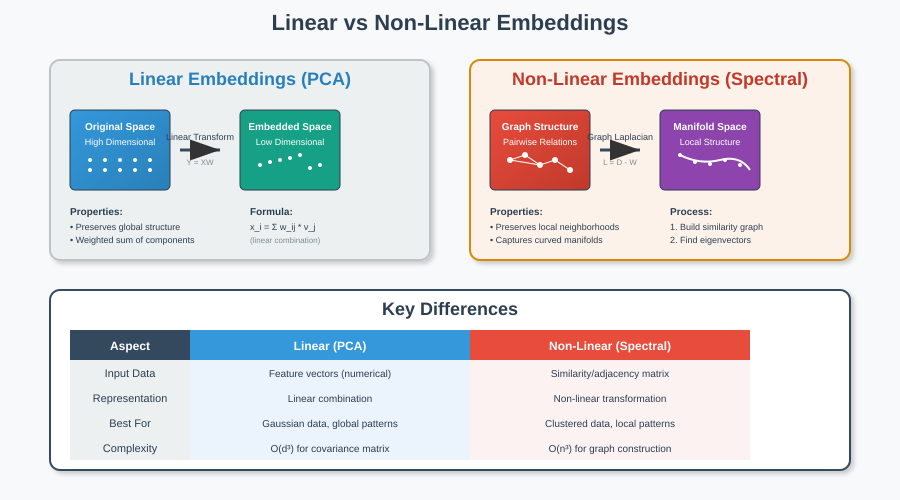
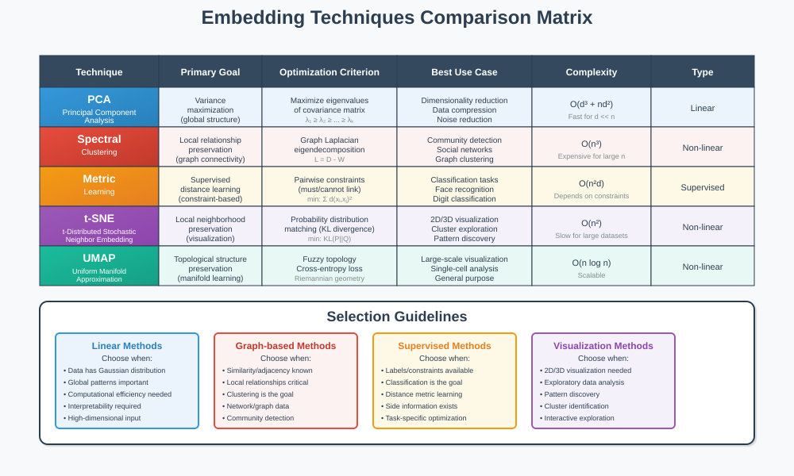
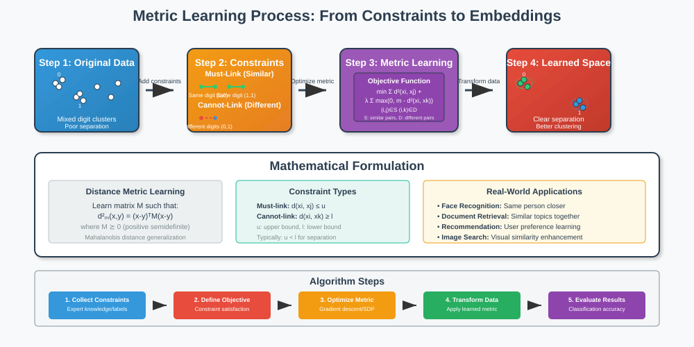
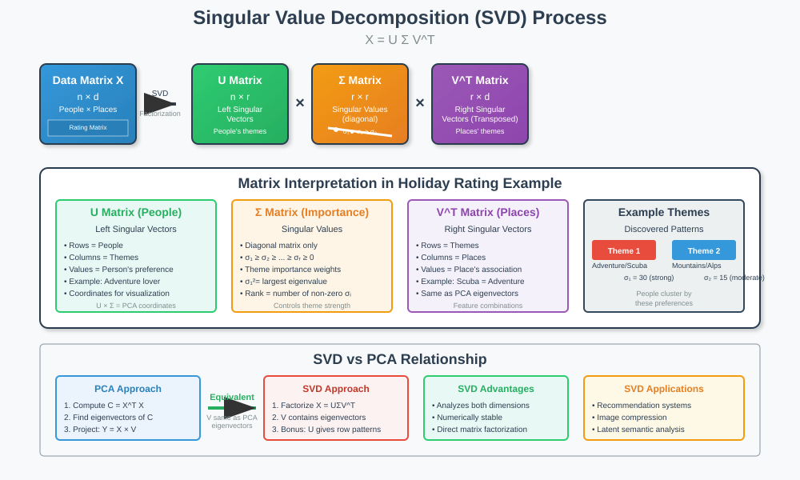

Embedding Types and Uses in Machine Learning
🧭 Quick Navigation
- Introduction to Embeddings
- Linear vs Non-Linear Embeddings
- Embedding Goals and Criteria
- Metric Learning Approach
- Singular Value Decomposition (SVD)
- PCA vs SVD Comparison
- Practical Applications
- References & Further Reading
Introduction to Embeddings
Embeddings are fundamental representations in machine learning that transform data points into new feature vectors, enabling us to discover hidden patterns and relationships in both structured and unstructured data. These mathematical transformations serve as the foundation for dimensionality reduction, clustering, and visualization techniques.

The concept of embedding extends beyond simple feature engineering—it represents a paradigm shift in how we understand and process complex datasets. By creating new coordinate systems through eigenvector analysis and matrix decomposition, embeddings reveal underlying structures that may not be apparent in the original data representation.
Key Benefits of Embeddings
- Pattern Discovery: Uncover latent relationships and themes in data
- Dimensionality Reduction: Reduce computational complexity while preserving essential information
- Visualization: Enable human-interpretable representations of high-dimensional data
- Feature Engineering: Create meaningful features from unstructured data sources
Linear vs Non-Linear Embeddings
Understanding the distinction between linear and non-linear embeddings is crucial for selecting appropriate techniques for different data types and analysis goals.

Linear Embeddings (PCA)
In Principal Component Analysis (PCA), each data point can be expressed as a weighted sum of principal components:
Where: - \(\mathbf{x}_i\) is the original data point - \(w_{ij}\) are the weights (coordinates in the new space) - \(\mathbf{v}_j\) are the principal components (eigenvectors)
Characteristics of Linear Embeddings: - Preserve global structure through linear transformations - Maintain proportional relationships between data points - Optimal for data with linear relationships and Gaussian distributions - Computationally efficient and mathematically interpretable
Non-Linear Embeddings (Spectral Clustering)
In Spectral Clustering, the embedding process involves:
- Graph Construction: Build similarity matrix based on pairwise relationships
- Laplacian Computation: Calculate graph Laplacian matrix
- Eigendecomposition: Find eigenvectors of the Laplacian
- Embedding Generation: Use eigenvectors as new coordinates
Where: - \(\mathbf{L}\) is the graph Laplacian - \(\mathbf{D}\) is the degree matrix - \(\mathbf{W}\) is the weight (similarity) matrix
Characteristics of Non-Linear Embeddings: - Preserve local neighborhood relationships - Capture complex, non-linear data manifolds - Ideal for data with curved or clustered structures - More flexible but computationally intensive
Embedding Goals and Criteria
Different embedding techniques are designed with specific objectives and optimization criteria, making them suitable for various types of data analysis tasks.

Common Embedding Objectives
| Technique | Primary Goal | Optimization Criterion | Best Use Case |
|---|---|---|---|
| PCA | Variance maximization | Global structure preservation | Dimensionality reduction |
| Spectral Clustering | Local relationship preservation | Graph connectivity | Community detection |
| Metric Learning | Supervised distance learning | Pairwise constraints | Classification tasks |
| t-SNE | Local neighborhood preservation | Probability distribution matching | Visualization |
| UMAP | Topological structure preservation | Manifold approximation | Large-scale visualization |
Design Principles
Local Relationship Preservation: Many embedding methods prioritize maintaining neighborhoods and similarities between nearby points. This is particularly important for: - Social network analysis (friendship connections) - Document similarity (related articles) - Image recognition (similar visual features)
Global Structure Maintenance: Some techniques focus on preserving overall data distribution and relationships across the entire dataset, essential for: - Principal component analysis - Linear discriminant analysis - Factor analysis
Metric Learning Approach
Metric learning represents a supervised approach to embedding generation that incorporates side information to guide the learning process.

Core Concept
Metric learning optimizes embeddings using pairwise constraints:
- Must-link constraints: Pairs that should be close (same class)
- Cannot-link constraints: Pairs that should be distant (different classes)
Mathematical Formulation
The objective function typically takes the form:
Where: - \(\mathcal{S}\) contains similar pairs (must-link) - \(\mathcal{D}\) contains dissimilar pairs (cannot-link) - \(d_{\mathbf{W}}(\mathbf{x}_i, \mathbf{x}_j)\) is the learned distance metric - \(\margin\) is the desired separation margin
Applications
Handwritten Digit Recognition: Guide embeddings so that digits of the same class cluster together while maintaining separation between different digit classes.
Face Recognition: Learn embeddings where faces of the same person are close while faces of different people are well-separated.
Document Retrieval: Create embeddings where semantically similar documents have small distances in the embedding space.
Singular Value Decomposition (SVD)
SVD provides a powerful alternative to PCA that offers additional insights into both row and column relationships in data matrices.

Mathematical Foundation
SVD decomposes any matrix \(\mathbf{X}\) into three component matrices:
Where: - \(\mathbf{U}\) contains left singular vectors (row relationships) - \(\boldsymbol{\Sigma}\) is a diagonal matrix of singular values (importance weights) - \(\mathbf{V}^T\) contains right singular vectors (column relationships)
Component Analysis
Singular Values (\(\boldsymbol{\Sigma}\)): - Diagonal entries represent theme importance - Squares of singular values equal PCA eigenvalues - Determine the rank and effective dimensionality
Right Singular Vectors (\(\mathbf{V}\)): - Equivalent to PCA eigenvectors - Represent feature combinations (themes) - Show how original features contribute to each component
Left Singular Vectors (\(\mathbf{U}\)): - Represent data point coordinates in the new space - Show how each observation relates to the themes - Enable simultaneous analysis of both dimensions
Practical Example: Holiday Destination Analysis
Consider a matrix where: - Rows: People rating holiday destinations - Columns: Different vacation spots - Themes: Adventure vs. Relaxation preferences
SVD Results: - \(\mathbf{V}\): Shows destination characteristics (scuba diving = adventure, spa = relaxation) - \(\mathbf{U}\): Reveals individual preferences (adventure seekers vs. relaxation lovers) - \(\boldsymbol{\Sigma}\): Indicates which themes are most important in the data
PCA vs SVD Comparison
While closely related, PCA and SVD offer different perspectives and capabilities for data analysis.
Technical Relationship
| Aspect | PCA | SVD |
|---|---|---|
| Input | Covariance matrix | Original data matrix |
| Output | Eigenvectors & eigenvalues | Three factor matrices |
| Focus | Column relationships only | Both row and column relationships |
| Computation | \(\mathbf{C} = \mathbf{X}^T\mathbf{X}\) eigendecomposition | Direct matrix factorization |
| Memory | Requires covariance matrix | Works directly on data |
When to Use Each Method
Choose PCA when: - Primary goal is dimensionality reduction - Focus on feature relationships and variance explanation - Working with covariance or correlation analysis - Need interpretable principal components
Choose SVD when: - Need to understand both row and column patterns - Working with recommendation systems - Performing matrix completion or denoising - Require numerical stability for ill-conditioned matrices
Computational Considerations
PCA Complexity: \(O(d^3 + nd^2)\) where \(d\) is dimensions, \(n\) is samples SVD Complexity: \(O(nd \min(n,d))\) for truncated SVD
For large datasets with \(n >> d\), SVD often provides better computational efficiency.
Practical Applications
🎯 Industry Applications
Natural Language Processing: - Word embeddings (Word2Vec, GloVe, BERT) - Document similarity and clustering - Sentiment analysis and topic modeling
Computer Vision: - Feature extraction from images - Face recognition systems - Object detection and classification
Recommendation Systems: - User-item matrix factorization - Collaborative filtering - Content-based recommendations
Bioinformatics: - Gene expression analysis - Protein structure prediction - Population genetics studies
🚀 Google Colab Integration

# Example: Implementing PCA vs SVD comparison
import numpy as np
from sklearn.decomposition import PCA, TruncatedSVD
import matplotlib.pyplot as plt
# Load your data
X = np.random.randn(100, 10) # Example data
# PCA approach
pca = PCA(n_components=2)
X_pca = pca.fit_transform(X)
# SVD approach
svd = TruncatedSVD(n_components=2)
X_svd = svd.fit_transform(X)
# Visualization comparison
fig, (ax1, ax2) = plt.subplots(1, 2, figsize=(12, 5))
ax1.scatter(X_pca[:, 0], X_pca[:, 1])
ax1.set_title('PCA Embedding')
ax2.scatter(X_svd[:, 0], X_svd[:, 1])
ax2.set_title('SVD Embedding')
🤗 Hugging Face Models
Explore pre-trained embedding models: - sentence-transformers/all-MiniLM-L6-v2 - openai/clip-vit-base-patch32 - facebook/dino-vitb16
References & Further Reading
📚 Core Papers
- Jolliffe, I. T. (2002). Principal Component Analysis. Springer Series in Statistics.
- von Luxburg, U. (2007). "A tutorial on spectral clustering." Statistics and Computing, 17(4), 395-416.
- Weinberger, K. Q., & Saul, L. K. (2009). "Distance metric learning for large margin nearest neighbor classification." JMLR, 10, 207-244.
- Tenenbaum, J. B., Silva, V. D., & Langford, J. C. (2000). "A global geometric framework for nonlinear dimensionality reduction." Science, 290(5500), 2319-2323.
📖 Advanced Resources
- Bengio, Y., Courville, A., & Vincent, P. (2013). "Representation learning: A review and new perspectives." IEEE TPAMI, 35(8), 1798-1828.
- McInnes, L., Healy, J., & Melville, J. (2018). "UMAP: Uniform manifold approximation and projection for dimension reduction." arXiv preprint arXiv:1802.03426.
- Kipf, T. N., & Welling, M. (2016). "Semi-supervised classification with graph convolutional networks." ICLR 2017.
- Hamilton, W. L. (2020). Graph Representation Learning. Morgan & Claypool Publishers.